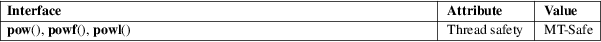

pow, powf, powl − power functions
Math library (libm, −lm)
#include <math.h>
double
pow(double x, double y);
float powf(float x, float y);
long double powl(long double x, long
double y);
Feature Test Macro Requirements for glibc (see feature_test_macros(7)):
powf(),
powl():
_ISOC99_SOURCE || _POSIX_C_SOURCE >= 200112L
|| /* Since glibc 2.19: */ _DEFAULT_SOURCE
|| /* glibc <= 2.19: */ _BSD_SOURCE || _SVID_SOURCE
These functions return the value of x raised to the power of y.
On success, these functions return the value of x to the power of y.
If the result overflows, a range error occurs, and the functions return HUGE_VAL, HUGE_VALF, or HUGE_VALL, respectively, with the mathematically correct sign.
If result underflows, and is not representable, a range error occurs, and 0.0 with the appropriate sign is returned.
If x is +0 or −0, and y is an odd integer less than 0, a pole error occurs and HUGE_VAL, HUGE_VALF, or HUGE_VALL, is returned, with the same sign as x.
If x is +0 or −0, and y is less than 0 and not an odd integer, a pole error occurs and +HUGE_VAL, +HUGE_VALF, or +HUGE_VALL, is returned.
If x is +0 (−0), and y is an odd integer greater than 0, the result is +0 (−0).
If x is 0, and y greater than 0 and not an odd integer, the result is +0.
If x is −1, and y is positive infinity or negative infinity, the result is 1.0.
If x is +1, the result is 1.0 (even if y is a NaN).
If y is 0, the result is 1.0 (even if x is a NaN).
If x is a finite value less than 0, and y is a finite noninteger, a domain error occurs, and a NaN is returned.
If the absolute value of x is less than 1, and y is negative infinity, the result is positive infinity.
If the absolute value of x is greater than 1, and y is negative infinity, the result is +0.
If the absolute value of x is less than 1, and y is positive infinity, the result is +0.
If the absolute value of x is greater than 1, and y is positive infinity, the result is positive infinity.
If x is negative infinity, and y is an odd integer less than 0, the result is −0.
If x is negative infinity, and y less than 0 and not an odd integer, the result is +0.
If x is negative infinity, and y is an odd integer greater than 0, the result is negative infinity.
If x is negative infinity, and y greater than 0 and not an odd integer, the result is positive infinity.
If x is positive infinity, and y less than 0, the result is +0.
If x is positive infinity, and y greater than 0, the result is positive infinity.
Except as specified above, if x or y is a NaN, the result is a NaN.
See math_error(7) for information on how to determine whether an error has occurred when calling these functions.
The following
errors can occur:
Domain error: x is negative, and y is a finite
noninteger
errno is set to EDOM. An invalid floating-point exception (FE_INVALID) is raised.
Pole error: x is zero, and y is negative
errno is set to ERANGE (but see BUGS). A divide-by-zero floating-point exception (FE_DIVBYZERO) is raised.
Range error: the result overflows
errno is set to ERANGE. An overflow floating-point exception (FE_OVERFLOW) is raised.
Range error: the result underflows
errno is set to ERANGE. An underflow floating-point exception (FE_UNDERFLOW) is raised.
For an explanation of the terms used in this section, see attributes(7).

C11, POSIX.1-2008.
C99, POSIX.1-2001.
The variant returning double also conforms to SVr4, 4.3BSD, C89.
Historical
bugs (now fixed)
Before glibc 2.28, on some architectures (e.g., x86-64)
pow() may be more than 10,000 times slower for some
inputs than for other nearby inputs. This affects only
pow(), and not powf() nor powl(). This
problem was fixed in glibc 2.28.
A number of bugs in the glibc implementation of pow() were fixed in glibc 2.16.
In glibc 2.9 and earlier, when a pole error occurs, errno is set to EDOM instead of the POSIX-mandated ERANGE. Since glibc 2.10, glibc does the right thing.
In glibc 2.3.2 and earlier, when an overflow or underflow error occurs, glibc’s pow() generates a bogus invalid floating-point exception (FE_INVALID) in addition to the overflow or underflow exception.
cbrt(3), cpow(3), sqrt(3)